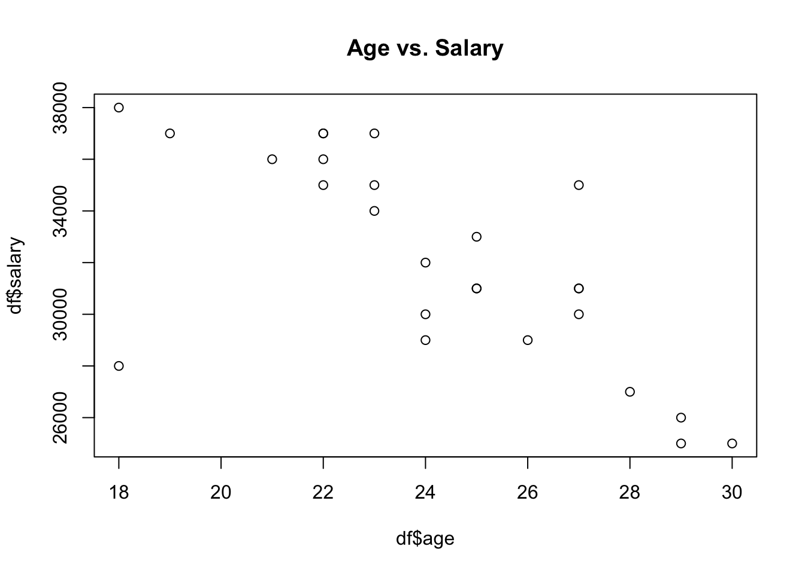
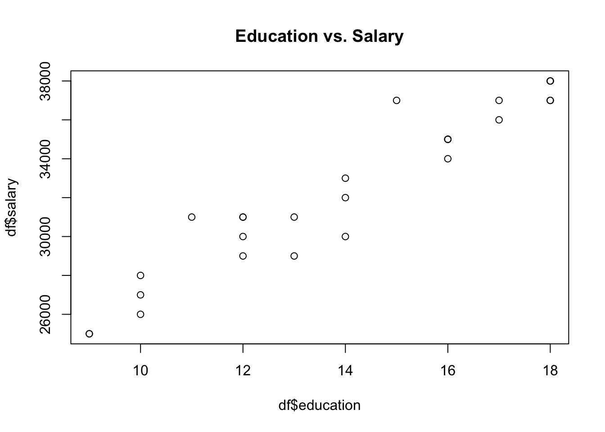
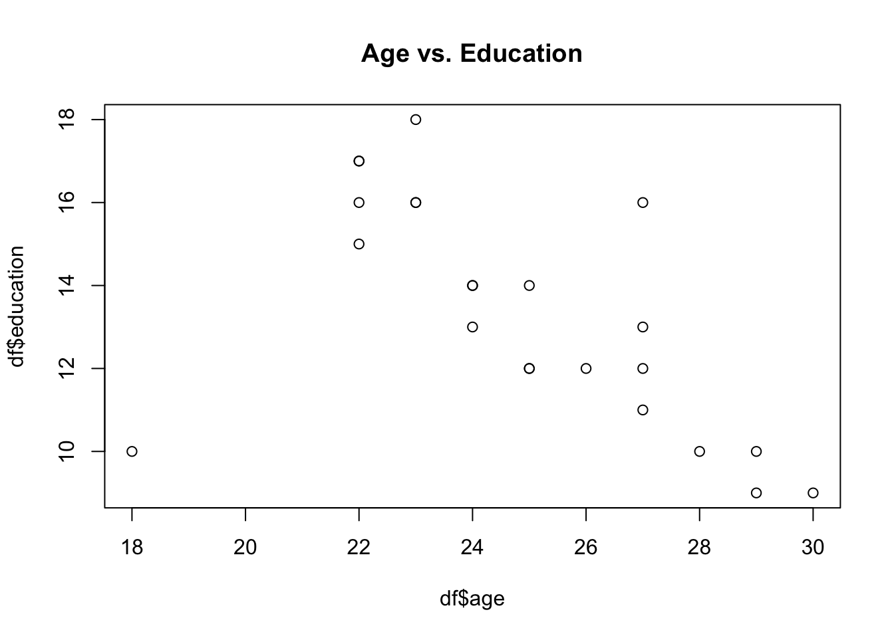
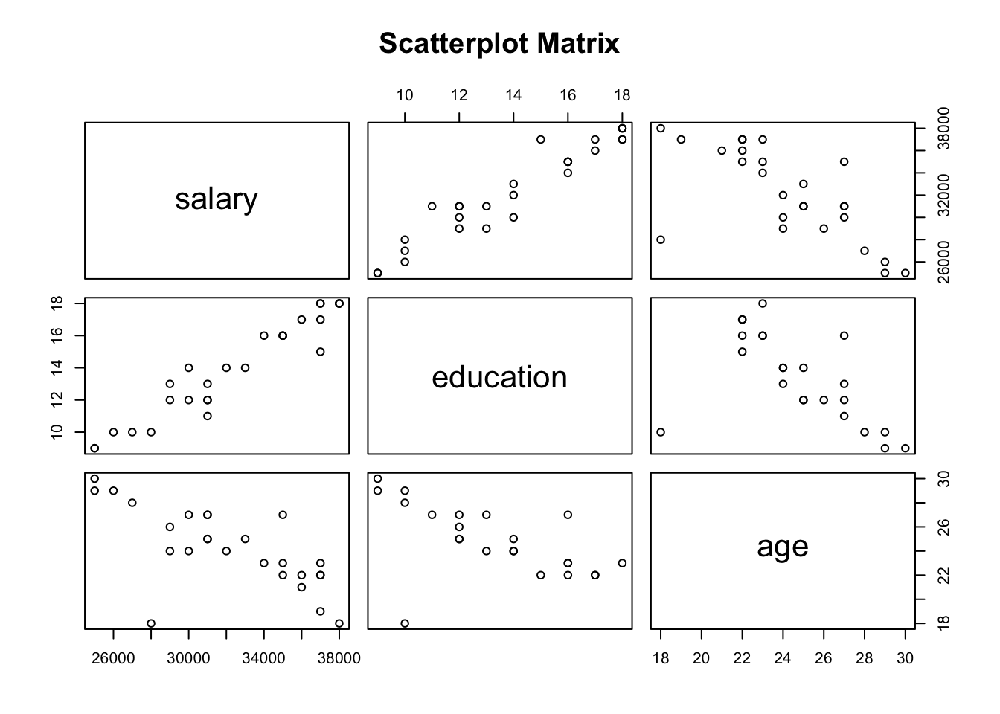
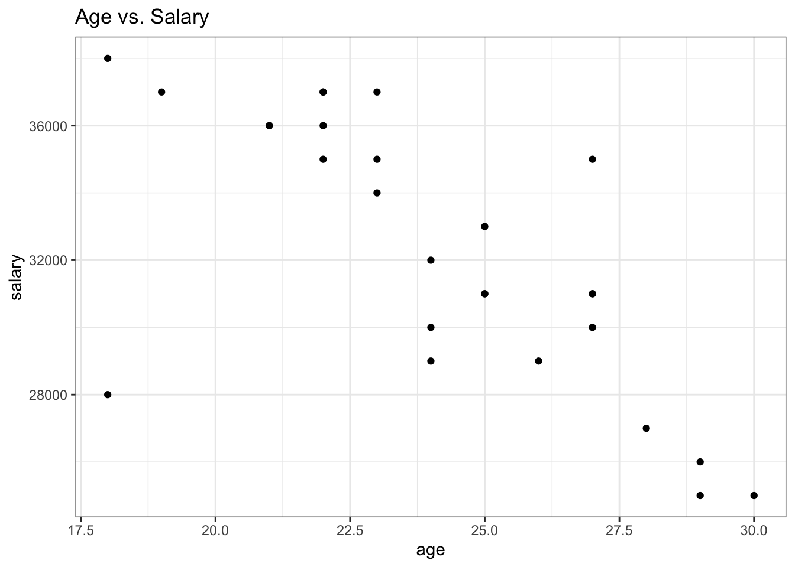
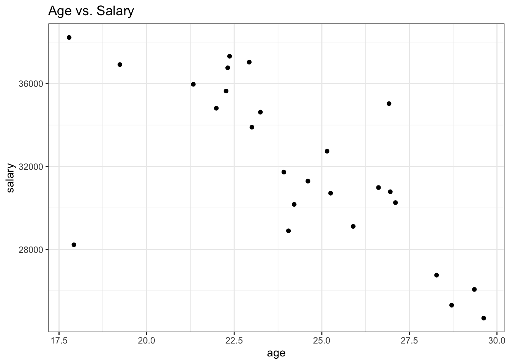
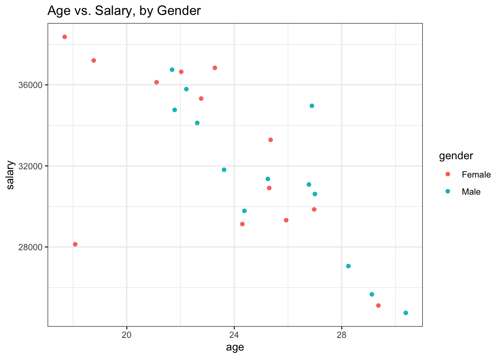
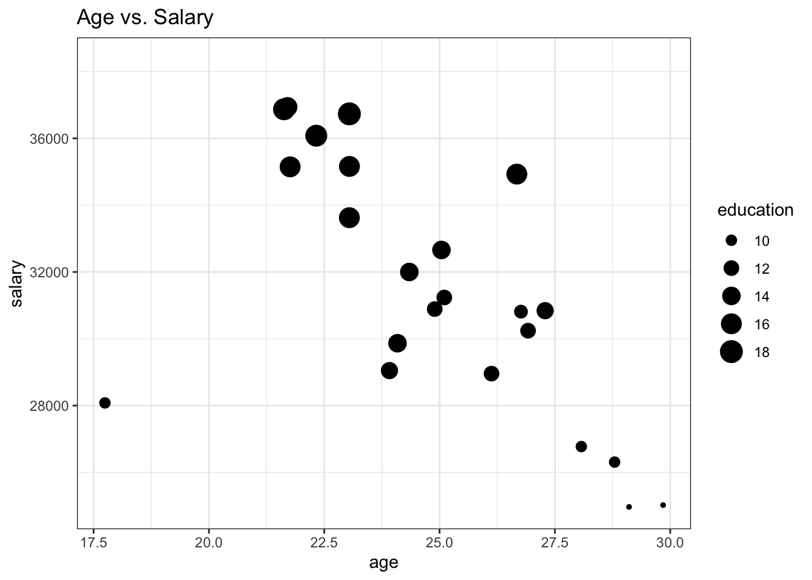
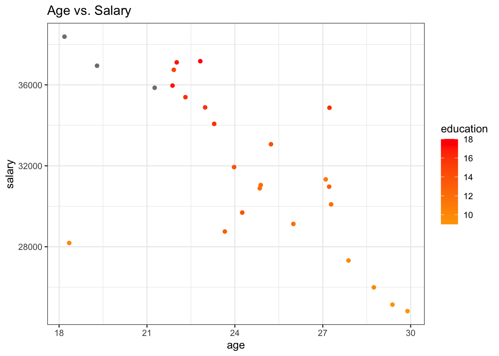

Exploring Relationship Between Variables | scatter-plot
2021-08-10When to use scatterplot?
When dealing with numerical data, the most common way to graphically explore the patterns and relationships between variables and draw a conclusion about how variables correlate to one another is by plotting the data points using a scatterplot. A scatterplot uses dots/markers to represent values for two numeric variables where the position of each dot indicates values for an individual data point in the (x,y) coordinates.
Scatterplots are used primarily to determine the strength and direction of the relationship between two numeric variables.
The direction of the relationship is determined by how
y variable changes by an increase in x
variable.
- When the
yvariable tends to increase by increasing thexvariable, it shows the positive relationship between two variables. - When the
yvariable tends to decrease by increasing thexvariable, it shows the negative relationship between two variables. - If it is impossible to establish either of the above criteria, there is not any meaningful relationship between the variables.
The strength of the relationship is determined by how spread the data points are in the (x,y) coordinates.
- When the data points lie exactly along a straight line, it shows the perfect relationship.
- When the data points are closed to one another and are concentrated near the straight line, it shows a strong relationship.
- If the data points appeared randomly scattered or equally distributed across the plot, it shows no relationship or a weak relationship.

Scatterplot using the base R functions
The plot(x,y) function is used to create a
scatterplot where x and y are columns
to be plotted in the x-axis and y-axis, respectively. Each
point’s horizontal position indicates the value of
x (column that is plotted in the x-axis) and the
vertical position of each point indicates the value of
y (column that is plotted in the y-axis).
For example, you collect data from 30 individuals about their education level, age, and salary as well as the gender of each individual as below.
df <- data.frame(
gender = c("Male", "Male", "Male", "Male", "Male", "Male", "Male", "Male", "Male", "Female", "Female", "Female", "Female", "Female", "Female", "Female", "Female", "Female", "Female", "Female", "Male", "Male", "Male", "Male", "Female", "Female", "Female", "Female", "Female", "Male"),
age = c(30, 25, 27, 28, 24, 29, 27, 24, 22, NA, NA, 21, 25, 27, 29, 24, 22, 18, NA, 25, 22, 23, 27, NA, 18, 23, 19, 26, 23, 22),
salary = c(25000, 31000, 35000, 27000, 32000, 26000, 31000, 30000, 35000, 38000, 37000, 36000, 33000, 30000, 25000, 29000, 37000, 28000, 38000, 31000, 37000, 34000, 31000, 38000, 38000, 35000, 37000, 29000, 37000, 36000),
education = c(9, 12, 16, 10, 14, 10, 11, 14, 16, 18, 18, NA, 14, 12, 9, 13, 15, 10, 18, 12, 17, 16, 13, 18, NA, 16, NA, 12, 18, 17)
)
df## gender age salary education
## 1 Male 30 25000 9
## 2 Male 25 31000 12
## 3 Male 27 35000 16
## 4 Male 28 27000 10
## 5 Male 24 32000 14
## 6 Male 29 26000 10
## 7 Male 27 31000 11
## 8 Male 24 30000 14
## 9 Male 22 35000 16
## 10 Female NA 38000 18
## 11 Female NA 37000 18
## 12 Female 21 36000 NA
## 13 Female 25 33000 14
## 14 Female 27 30000 12
## 15 Female 29 25000 9
## 16 Female 24 29000 13
## 17 Female 22 37000 15
## 18 Female 18 28000 10
## 19 Female NA 38000 18
## 20 Female 25 31000 12
## 21 Male 22 37000 17
## 22 Male 23 34000 16
## 23 Male 27 31000 13
## 24 Male NA 38000 18
## 25 Female 18 38000 NA
## 26 Female 23 35000 16
## 27 Female 19 37000 NA
## 28 Female 26 29000 12
## 29 Female 23 37000 18
## 30 Male 22 36000 17By plotting the data points we can explore the relationship between age, education, and salary.
# plot Age against Salary
plot(df$age, df$salary, main = 'Age vs. Salary')
# plot Education against Salary
plot(df$education, df$salary, main = 'Education vs. Salary')
The plot shown above reveals that those who are younger tend to have a higher salary. Moreover, a higher education level can predict a higher salary as well.
Let’s plot age against education to explore the relationship between the two variables.

It is also possible to explore the relationship between age,
salary, and education in one plot by creating a scatterplot
matrix using pairs() function.

The above plot confirms the same findings. It shows a positive correlation between education and salary, however, there is a negative correlation between age and salary. Furthermore, those who are younger tend to have a higher education level.
Scatterplot using ggplot2 package
As I mentioned in the previous posts, it is preferred to use
the ggplot2 packages for visualization because the resulting
plot is easy to modify and it is more popular among R users to
use the ggplot2 package. The geom_point() function
can be used from ggplot2 package to create
scatterplots. For example, let’s plot age against salary.
library(ggplot2)
ggplot(df, aes(x = age, y = salary)) +
geom_point() +
theme_bw() +
labs(title = "Age vs. Salary")
The common issue with scatterplot is when we have lots of
data, the points will overlap (known as overplotting). There are
several ways to alleviate this issue. The most common way is to
use geom_jitter() instead of
geom_point().
The geom_jitter() adds a small amount of random
noise to the location of each point to make the plot easier to
read. For example, compare the below plot to the one above.

Scatterplots are very useful in identifying the relationship between two numerical variables among several groups as well by adding a third variable. When the third variable is categorical data, the most common way is by giving the dots a distinct hue to show the membership of each point to a respective group. For instance, let’s plot the relationship between age and salary among males and females.
ggplot(df, aes(x = age, y = salary, color = gender)) +
geom_jitter() +
theme_bw() +
labs(title = "Age vs. Salary, by Gender")
To depict the third variable that has numeric values, the common way is to change the dots’ size based on the values of the third variable, where larger points indicate higher values and smaller points indicate lower values. Moreover, hue can also be used when the third variable has numeric values by using a sequence of colors rather than using distinct colors for points like in the categorical case.
ggplot(df, aes(x = age, y = salary, size = education)) +
geom_jitter() +
theme_bw() +
labs(title = "Age vs. Salary")
ggplot(df, aes(x = age, y = salary, color = education)) +
geom_jitter() +
scale_fill_gradient(low = "orange", high = "red", na.value = "grey50", aesthetics = "color") +
theme_bw() +
labs(title = "Age vs. Salary")